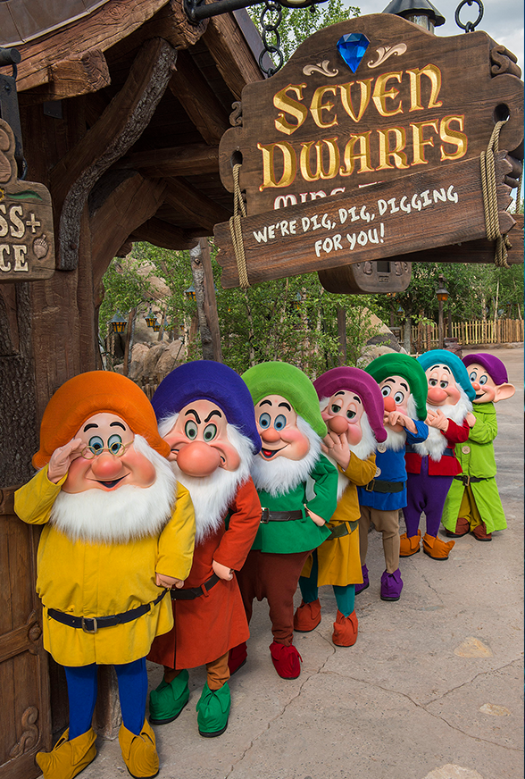
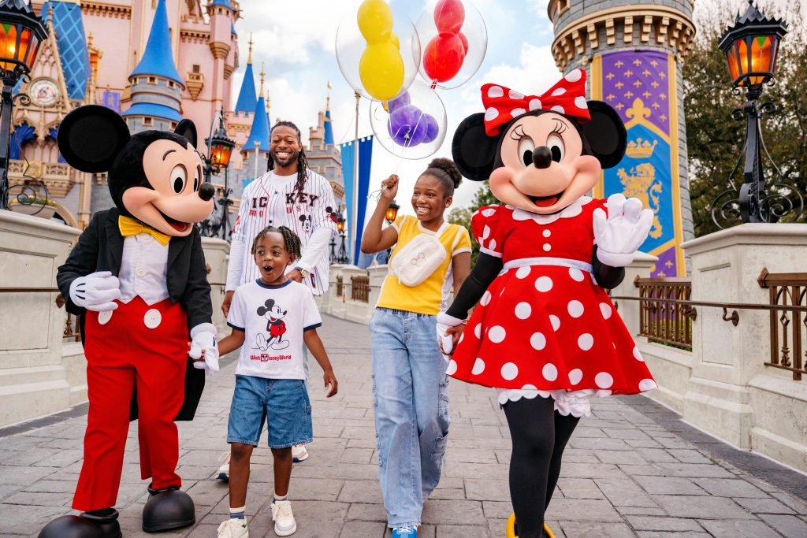

Magic Kingdom is the most iconic theme park at Walt Disney World and is home to the famous Cinderella Castle. The park features six themed lands filled with classic attractions, beloved Disney characters, exciting entertainment, and spectacular nighttime fireworks. Whether you're riding timeless favorites like Pirates of the Caribbean and Haunted Mansion or watching the Festival of Fantasy Parade, Magic Kingdom offers a magical experience for guests of all ages.
Magic Kingdom is divided into six uniquely themed lands, each offering its own attractions, dining, entertainment, and Disney magic. Main Street, U.S.A. serves as the park's entrance and recreates the charm of a small American town in the early 1900s. Guests can browse shops, enjoy classic treats, meet Disney characters, and take in spectacular views of Cinderella Castle. Adventureland transports visitors to exotic jungles and tropical islands. Frontierland celebrates the spirit of the American Old West with western-themed dining and entertainment. Liberty Square takes guests back to colonial America and features historical architecture, the Liberty Square Riverboat, and the Hall of Presidents. Fantasyland brings classic Disney stories to life with attractions such as Peter Pan's Flight, The Many Adventures of Winnie the Pooh, and opportunities to meet Disney princesses. Tomorrowland offers a futuristic look at tomorrow through science fiction and innovation. Guests can experience Space Mountain and TRON Lightcycle Run, one of the park's newest thrill attractions. Each land offers its own unique atmosphere, making Magic Kingdom a destination where every guest can find adventure, imagination, and unforgettable Disney memories.
Top Rides
- TRON Lightcycle / Run
- Seven Dwarfs Mine Train
- Space Mountain
- Haunted Mansion
- Pirates of the Caribbean
Top Restaurants
- Be Our Guest Restaurant
- Cinderella's Royal Table
- Crystal Palace
- Liberty Tree Tavern
- Skipper Canteen
Top Shows
- Happily Ever After Fireworks
- Festival of Fantasy Parade
- Mickey's Magical Friendship Faire
- Country Bear Musical Jamboree
- Disney Adventure Friends Cavalcade